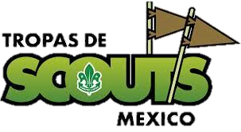
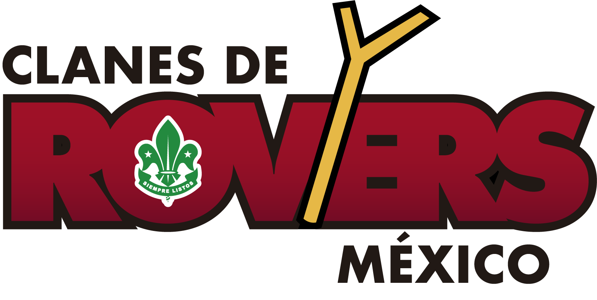

Tropa

La Tropa Scout es la Sección de jóvenes con edades comprendidas entre los 11 y 14 años. Es una etapa crucial en la vida scout, pues es el periodo de afirmación de uno mismo; donde la idea de aventura es mas patente, se desarrolla el caracter y la actitud a través de la convivencia, enriqueciendo como persona y potenciando el compromiso con los demás.
Comunidad
Esta sección se caracteriza por el uniforme Azul, su rango de edad va de los 15 a los 18 años. Se agrupan en el sistema de Equipos que son de 3 a 6 integrantes. También pueden crear Grupos de Trabajo para proyectos específicos. Pueden ser Comunidades Mixtas, con equipos Mixtos o Separados, tu grupo escogerá la manera mas adecuada para trabajar.
Clan

Los Clanes de Rovers trabajan como un conjunto de individuos que se organizan en Comisiones según el proyecto que se esté realizando, es decir, no existen equipos. Aquellos que hayan sido investidos como Rovers conformanel Consejo Rover. Al frente de la Sección hay un responsable adulto por cada 12 muchachos. Esta conformado de mujeres y hombres de entre 18 y 23 años de edad